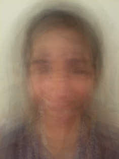

The Faces of Explo
What would happen if you took a photo of every staff member and every student from an Explo Program and merged them together into one photograph?
- 1 Program (Explo at Wellesley)
- 965 students
- 141 faculty
- 1,245 total photographs (sometimes you take a photo more than once)



How Does This Work?
Standing on the backs of giants :) There is an application called ImageMagick that allows you to do things like blend two images together into one image. My initial theory was: if I can just step through all of the image files in a folder, I can progressively combine each image with the image that came before it and create one "merged" version of them all at the end.
Unfortunately this idea didn't work so well. When you combine the first two images together, everything looks fine. When you combine the third image with the newly-created merged image of the first two images, they will get combined unequally. The third image takes up 50% and the first two images
The solution is to do the combinations in phases. First, you go through the folder of images and combine them in pairs, storing the results in a new folder. Then, you go through that new folder and combine the images in pairs, storing the results in
Here's the image combination code, for those of you who may be interested.